library(tidyverse)
library(ggplot2)
library(here)
library(knitr)19 Visualización de datos
Objetivos de aprendizaje
Al finalizar este capítulo, el lector será capaz de:
- Comprender la importancia de la visualización dentro del análisis exploratorio de datos.
- Construir gráficos reproducibles utilizando
ggplot2. - Representar distribuciones mediante histogramas y curvas de densidad.
- Aplicar transformaciones simples para mejorar la visualización de variables asimétricas.
- Comparar grupos utilizando gráficos de barras y diagramas de caja.
- Interpretar correctamente diferentes tipos de visualizaciones estadísticas.
- Aplicar buenas prácticas en la comunicación visual de resultados.
19.1 Introducción
La visualización de datos constituye una de las herramientas más importantes dentro del análisis estadístico moderno. Mientras que las tablas permiten resumir información numérica, los gráficos facilitan la identificación de patrones, tendencias, valores atípicos y relaciones entre variables de forma mucho más intuitiva (Wickham, 2016).
En investigación científica, la visualización no debe entenderse únicamente como un elemento estético. Un gráfico correctamente diseñado permite explorar los datos, generar hipótesis y comunicar resultados de manera clara y efectiva (Wilkinson, 2005).
La visualización constituye además uno de los pilares del análisis exploratorio de datos, ya que permite comprender la estructura de una base antes de aplicar procedimientos estadísticos más complejos (Healy, 2018).
En este capítulo utilizaremos la base analítica construida a partir de la Encuesta de Superficie y Producción Agropecuaria Continua (ESPAC 2025).
19.2 Cargando la base de trabajo
Como este capítulo debe poder ejecutarse de forma independiente, comenzaremos cargando los paquetes necesarios y la base analítica construida en capítulos anteriores.
base_analitica <- readRDS(
here::here(
"datos",
"procesado",
"ESPAC_2025",
"sunac_transformado.rds"
)
)19.3 Explorando la estructura de la base
Antes de construir gráficos conviene verificar la estructura de la información disponible.
glimpse(
base_analitica
)Rows: 84,538
Columns: 10
$ Identificador <chr> "01135101000330001", "01135101000330001", "01135101…
$ provincia <fct> AZUAY, AZUAY, AZUAY, AZUAY, AZUAY, AZUAY, AZ…
$ su_tenencia <fct> DUEÑO, DUEÑO, DUEÑO, DUEÑO, DUEÑO, DUEÑO, DUEÑO, DU…
$ tamano_upa <chr> "Pequeña", "Micro", "Mediana", "Micro", "Pequeña", …
$ grupo_tamano <chr> "Pequeños productores", "Pequeños productores", "Me…
$ tiene_bosque <chr> "Sí", "Sí", "No", "No", "No", "Sí", "No", "Sí", "No…
$ tiene_transitorios <chr> "No", "No", "No", "No", "No", "No", "No", "No", "No…
$ pct_bosque <dbl> 100, 100, NA, NA, NA, 100, NA, 100, NA, NA, NA, NA,…
$ supertotal <dbl> 2.7616, 0.7581, 5.1941, 0.2862, 2.5763, 0.8191, 3.3…
$ fact_exp_fin <dbl> 66.37009, 66.37009, 66.37009, 66.37009, 66.37009, 6…Interpretación
La base analítica contiene las variables seleccionadas y transformadas durante el proceso de preparación de datos. A partir de este punto utilizaremos esta estructura para desarrollar diferentes visualizaciones estadísticas.
19.4 Preparando una variable transformada
La variable supertotal representa la superficie total de la unidad productiva agropecuaria. Como suele ocurrir con variables agrarias, su distribución puede ser altamente asimétrica: muchas unidades tienen superficies pequeñas y pocas unidades presentan superficies muy grandes.
Para visualizar mejor esta variable utilizaremos una transformación logarítmica:
log_supertotal = log(supertotal + 1)La función log1p() calcula precisamente log(x + 1), evitando problemas cuando existen valores iguales a cero.
base_analitica <- base_analitica |>
mutate(
log_supertotal =
log1p(
supertotal
)
)19.5 Resumen estadístico previo
Antes de construir gráficos resulta útil examinar algunas estadísticas descriptivas de la variable original y de su versión transformada.
data.frame(
Variable = c(
"supertotal",
"log_supertotal"
),
Minimo = c(
min(
base_analitica$supertotal,
na.rm = TRUE
),
min(
base_analitica$log_supertotal,
na.rm = TRUE
)
),
Mediana = c(
median(
base_analitica$supertotal,
na.rm = TRUE
),
median(
base_analitica$log_supertotal,
na.rm = TRUE
)
),
Media = c(
mean(
base_analitica$supertotal,
na.rm = TRUE
),
mean(
base_analitica$log_supertotal,
na.rm = TRUE
)
),
Maximo = c(
max(
base_analitica$supertotal,
na.rm = TRUE
),
max(
base_analitica$log_supertotal,
na.rm = TRUE
)
)
) |>
kable(
digits = 2,
caption = "Resumen de superficie total original y transformada"
)| Variable | Minimo | Mediana | Media | Maximo |
|---|---|---|---|---|
| supertotal | 0 | 0.37 | 6.98 | 21468.92 |
| log_supertotal | 0 | 0.32 | 0.71 | 9.97 |
Interpretación
La variable original presenta una diferencia muy amplia entre la mediana y el valor máximo. La transformación logarítmica reduce la escala de los valores extremos y permite visualizar mejor la distribución general de la superficie.
19.6 ¿Por qué visualizar datos?
Las visualizaciones permiten:
- Identificar patrones.
- Detectar valores extremos.
- Comprender distribuciones.
- Comparar grupos.
- Comunicar resultados.
- Generar hipótesis de investigación.
Por ejemplo, una tabla puede indicar que una variable presenta una media elevada, pero únicamente un gráfico permite comprender cómo se distribuyen realmente las observaciones.
19.7 La gramática de los gráficos
El paquete ggplot2 se basa en la denominada Gramática de los Gráficos propuesta por Wilkinson (Wilkinson, 2005).
La lógica general consiste en combinar:
Datos
+
Variables
+
Geometrías
+
Escalas
+
Temas
=
GráficoLa estructura básica de un gráfico en ggplot2 es:
ggplot(
datos,
aes(
x = variable_x,
y = variable_y
)
) +
geom_tipo()Esta sintaxis será utilizada a lo largo de todo el capítulo.
19.8 Distribuciones de variables cuantitativas
Uno de los primeros objetivos del análisis exploratorio consiste en comprender cómo se distribuyen las variables numéricas.
En nuestro caso utilizaremos log_supertotal, que permite observar mejor la forma de la distribución de la superficie total.
19.9 Histograma de la superficie transformada
El histograma constituye una de las herramientas más utilizadas para representar distribuciones cuantitativas (Wilkinson, 2005).
ggplot(
base_analitica,
aes(
x = log_supertotal
)
) +
geom_histogram(
bins = 30,
fill = "steelblue",
color = "white"
) +
theme_minimal() +
labs(
x = "Logaritmo de la superficie total",
y = "Frecuencia"
)
Interpretación
La transformación logarítmica permite observar una distribución mucho más informativa. En lugar de concentrar casi todas las observaciones en el extremo izquierdo, el gráfico muestra con mayor claridad cómo se distribuyen las unidades productivas.
19.10 Curvas de densidad
Las curvas de densidad representan una versión suavizada de la distribución observada (Wickham, 2016).
ggplot(
base_analitica,
aes(
x = log_supertotal
)
) +
geom_density(
fill = "lightblue",
alpha = 0.6
) +
theme_minimal() +
labs(
x = "Logaritmo de la superficie total",
y = "Densidad"
)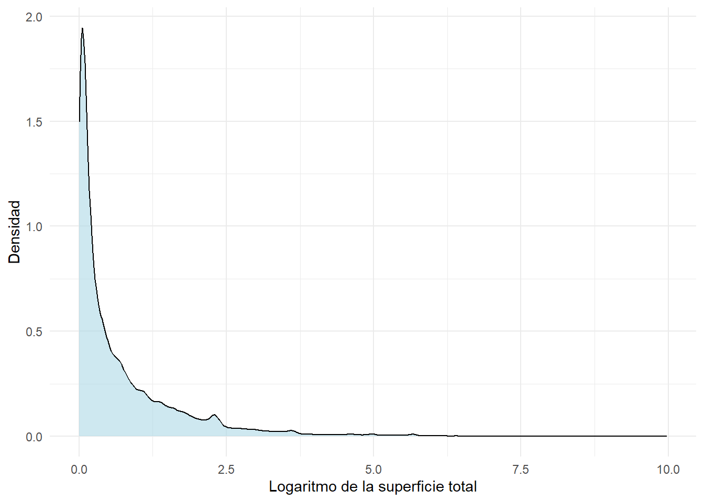
Interpretación
La densidad suavizada muestra la forma general de la distribución transformada y facilita la identificación de concentraciones de observaciones.
19.11 Histograma y densidad combinados
Una práctica frecuente consiste en combinar ambas representaciones.
ggplot(
base_analitica,
aes(
x = log_supertotal
)
) +
geom_histogram(
aes(
y = after_stat(density)
),
bins = 30,
fill = "lightgray",
color = "white"
) +
geom_density(
linewidth = 1
) +
theme_minimal() +
labs(
x = "Logaritmo de la superficie total",
y = "Densidad"
)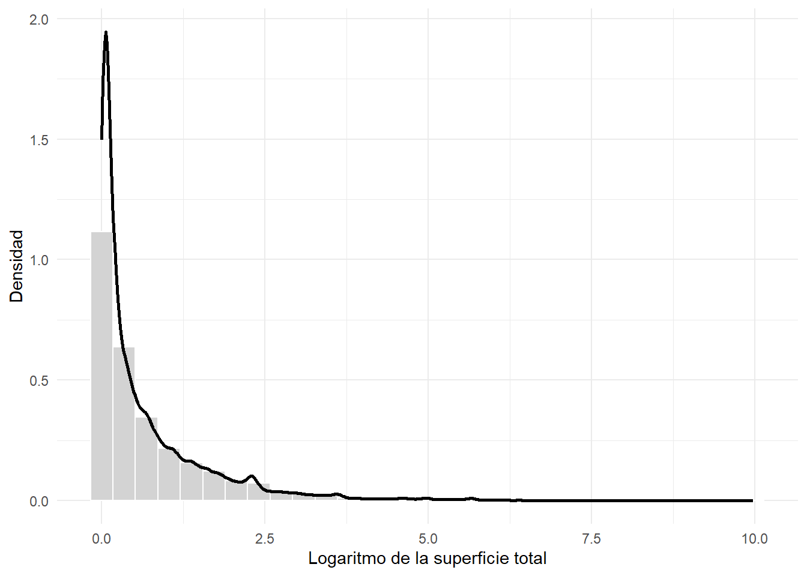
Interpretación
La combinación del histograma y la curva de densidad permite comparar las frecuencias observadas con la forma suavizada de la distribución.
19.12 Variables categóricas
Las variables categóricas requieren herramientas diferentes.
Analizaremos la variable:
tamano_upa19.13 Tabla de frecuencias
base_analitica |>
count(
tamano_upa
) |>
arrange(
desc(n)
) |>
kable(
caption = "Frecuencia de observaciones según tamaño de UPA"
)| tamano_upa | n |
|---|---|
| Micro | 56572 |
| Pequeña | 18014 |
| Mediana | 6846 |
| Grande | 3106 |
Interpretación
La tabla resume la cantidad de observaciones registradas en cada categoría de tamaño.
19.14 Gráficos de barras
Los gráficos de barras constituyen la herramienta más utilizada para representar variables categóricas (Healy, 2018).
ggplot(
base_analitica,
aes(
x = tamano_upa
)
) +
geom_bar(
fill = "steelblue"
) +
theme_minimal() +
labs(
x = "Tamaño de UPA",
y = "Frecuencia"
)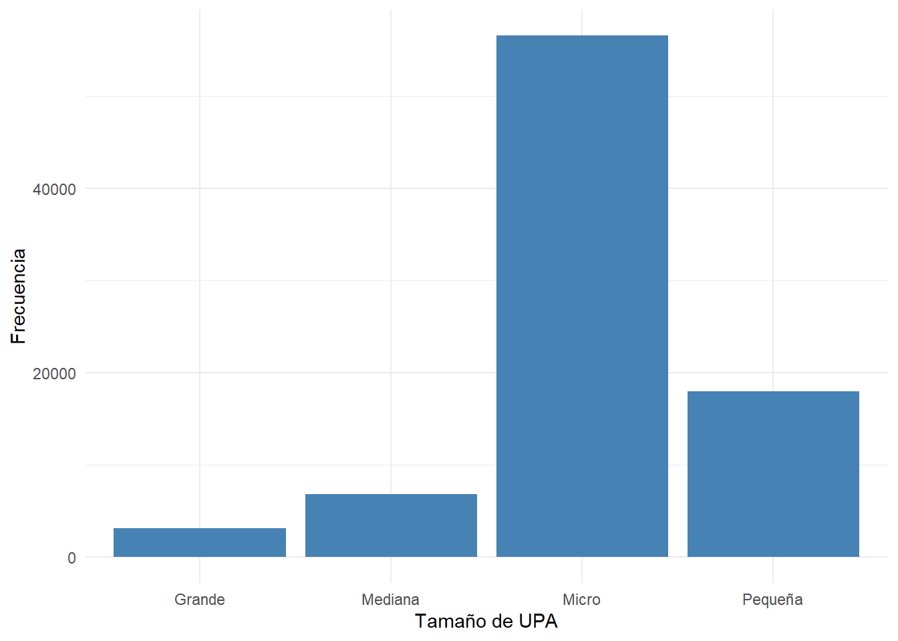
Interpretación
La altura de cada barra representa el número de observaciones registradas en cada categoría.
19.15 Comparaciones territoriales
También podemos analizar la distribución de observaciones entre provincias.
ggplot(
base_analitica,
aes(
x = provincia
)
) +
geom_bar(
fill = "steelblue"
) +
coord_flip() +
theme_minimal() +
labs(
x = "Provincia",
y = "Frecuencia"
)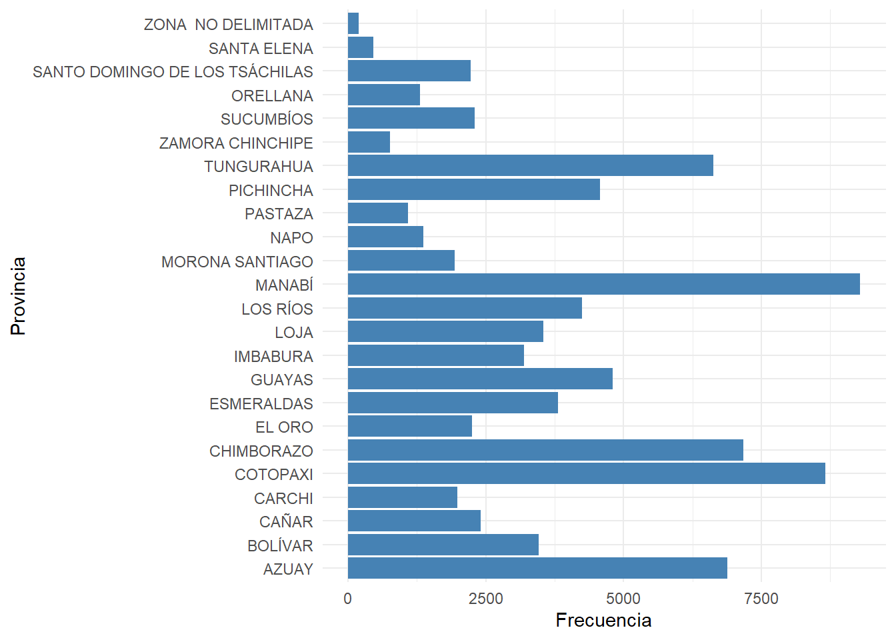
Interpretación
El gráfico permite identificar diferencias en la representación de observaciones entre provincias.
19.16 Diagramas de caja
Los diagramas de caja permiten comparar distribuciones entre grupos mediante medidas robustas de tendencia central y dispersión.
Para mejorar la lectura, utilizaremos la superficie transformada.
ggplot(
base_analitica,
aes(
x = tamano_upa,
y = log_supertotal
)
) +
geom_boxplot() +
theme_minimal() +
labs(
x = "Tamaño de UPA",
y = "Logaritmo de la superficie total"
)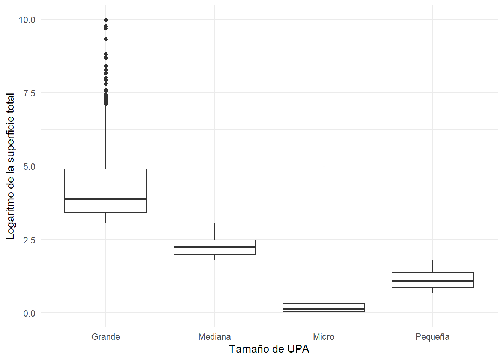
Interpretación
Las diferencias observadas entre las cajas sugieren que las categorías de tamaño presentan comportamientos distintos en términos de superficie total.
19.17 Comparación provincial de la superficie
ggplot(
base_analitica,
aes(
x = provincia,
y = log_supertotal
)
) +
geom_boxplot() +
coord_flip() +
theme_minimal() +
labs(
x = "Provincia",
y = "Logaritmo de la superficie total"
)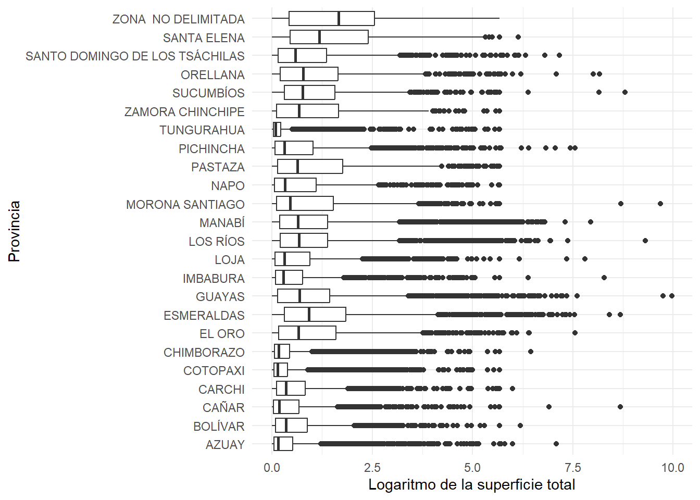
Interpretación
La transformación logarítmica permite comparar provincias sin que los valores extremadamente altos oculten la estructura principal de la distribución.
19.18 Relaciones entre variables
En la primera parte del capítulo aprendimos a visualizar distribuciones y comparar grupos. Sin embargo, muchas preguntas de investigación requieren analizar relaciones entre dos o más variables.
Por ejemplo, podríamos preguntarnos:
- ¿Existe relación entre la superficie total y el factor de expansión?
- ¿Los distintos tamaños de UPA presentan patrones visuales diferentes?
- ¿Existen diferencias territoriales en la distribución de la superficie?
- ¿Qué combinaciones de categorías son más frecuentes?
Las visualizaciones bivariadas y multivariadas permiten explorar estas preguntas antes de aplicar modelos estadísticos más complejos (Healy, 2018; Wilkinson, 2005).
19.19 Gráficos de dispersión
Los gráficos de dispersión permiten representar la relación entre dos variables numéricas.
En este caso analizaremos:
log_supertotal
y
fact_exp_finLa primera variable representa la superficie total transformada mediante logaritmo, mientras que la segunda corresponde al factor de expansión de la encuesta.
ggplot(
base_analitica,
aes(
x = log_supertotal,
y = fact_exp_fin
)
) +
geom_point(
alpha = 0.3
) +
theme_minimal() +
labs(
x = "Logaritmo de la superficie total",
y = "Factor de expansión"
)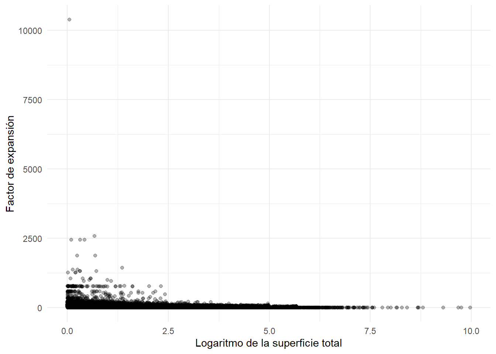
Interpretación
Cada punto representa una observación de la base analítica. El gráfico permite explorar si existe algún patrón visual entre la superficie total transformada y el factor de expansión.
19.20 Línea de tendencia
Una línea de tendencia permite resumir visualmente la relación promedio entre dos variables.
ggplot(
base_analitica,
aes(
x = log_supertotal,
y = fact_exp_fin
)
) +
geom_point(
alpha = 0.25
) +
geom_smooth(
method = "lm",
se = TRUE
) +
theme_minimal() +
labs(
x = "Logaritmo de la superficie total",
y = "Factor de expansión"
)
Interpretación
La línea de tendencia permite observar la dirección general de la relación. Esta visualización no debe interpretarse como evidencia causal, sino como una primera exploración descriptiva.
19.21 Incorporando una tercera variable
Los gráficos de dispersión pueden incorporar una tercera dimensión mediante el color.
En este caso utilizaremos la variable tamano_upa.
ggplot(
base_analitica,
aes(
x = log_supertotal,
y = fact_exp_fin,
color = tamano_upa
)
) +
geom_point(
alpha = 0.5
) +
theme_minimal() +
labs(
x = "Logaritmo de la superficie total",
y = "Factor de expansión",
color = "Tamaño de UPA"
)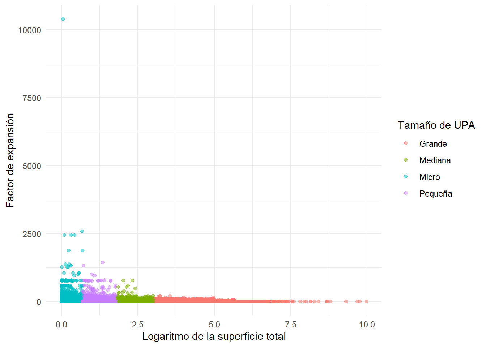
Interpretación
El color permite identificar si las categorías de tamaño presentan patrones diferenciados dentro de la relación entre superficie y factor de expansión.
19.22 Gráficos de burbujas
Los gráficos de burbujas permiten incorporar una dimensión adicional mediante el tamaño de los puntos.
ggplot(
base_analitica,
aes(
x = log_supertotal,
y = fact_exp_fin,
size = fact_exp_fin,
color = tamano_upa
)
) +
geom_point(
alpha = 0.4
) +
theme_minimal() +
labs(
x = "Logaritmo de la superficie total",
y = "Factor de expansión",
size = "Factor de expansión",
color = "Tamaño de UPA"
)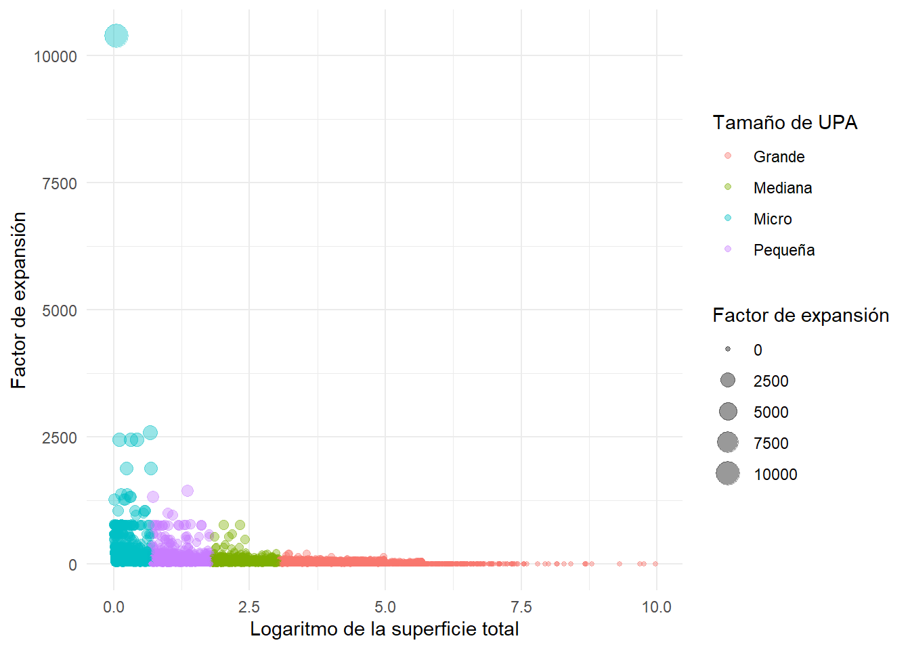
Interpretación
El gráfico representa simultáneamente la superficie transformada, el factor de expansión, el tamaño del punto y la categoría de tamaño de UPA. Aunque este tipo de gráfico puede ser visualmente atractivo, debe usarse con cuidado para no sobrecargar la interpretación.
19.23 Facetas
Las facetas permiten dividir un gráfico en varios paneles según una variable categórica.
Esto facilita la comparación entre grupos sin saturar una sola figura.
19.24 Histograma por tamaño de UPA
ggplot(
base_analitica,
aes(
x = log_supertotal
)
) +
geom_histogram(
bins = 25,
fill = "steelblue",
color = "white"
) +
facet_wrap(
~ tamano_upa
) +
theme_minimal() +
labs(
x = "Logaritmo de la superficie total",
y = "Frecuencia"
)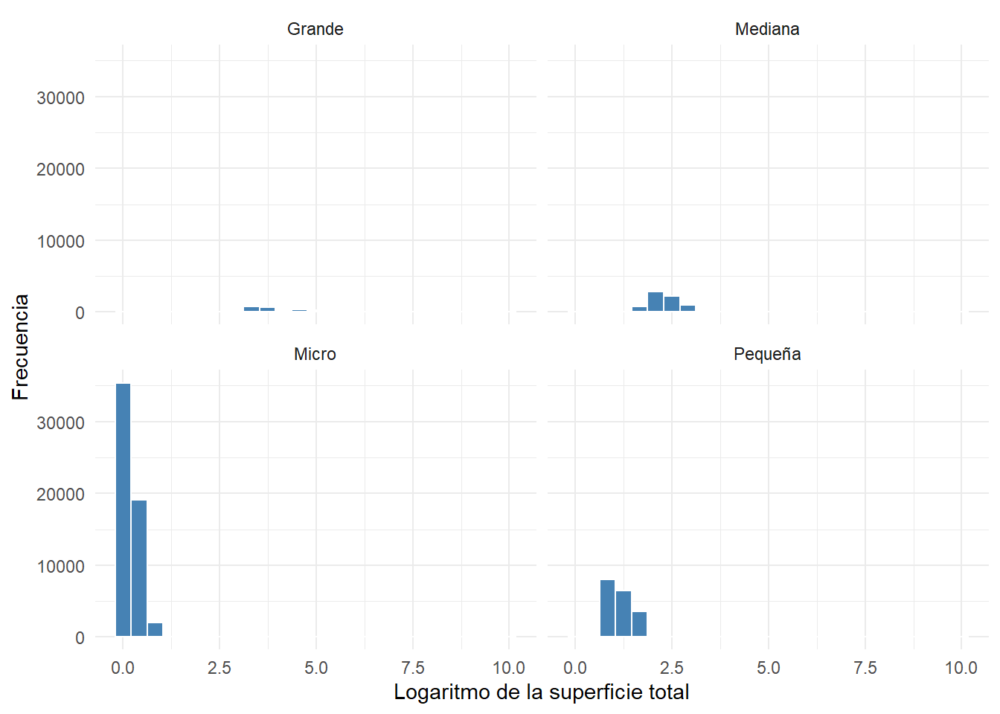
Interpretación
Cada panel muestra la distribución de la superficie transformada dentro de una categoría específica de tamaño de UPA.
19.25 Histograma por provincia
ggplot(
base_analitica,
aes(
x = log_supertotal
)
) +
geom_histogram(
bins = 20,
fill = "steelblue",
color = "white"
) +
facet_wrap(
~ provincia
) +
theme_minimal() +
labs(
x = "Logaritmo de la superficie total",
y = "Frecuencia"
)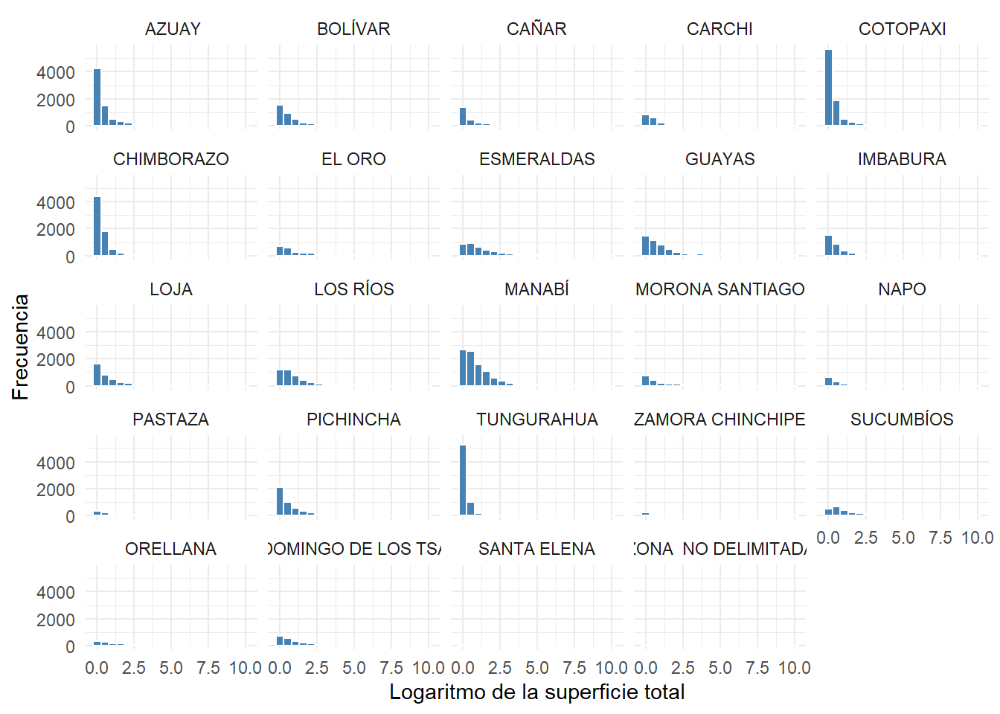
Interpretación
La división por provincia permite comparar visualmente la distribución territorial de la superficie transformada. Esta visualización ayuda a detectar provincias con patrones más concentrados o dispersos.
19.26 Mapas de calor
Los mapas de calor permiten representar una tabla cruzada mediante intensidad visual. Son útiles para identificar combinaciones frecuentes entre dos variables categóricas.
En este caso cruzaremos:
provincia
y
tamano_upa19.27 Preparando los datos para el mapa de calor
datos_heatmap <-
base_analitica |>
count(
provincia,
tamano_upa
)
head(
datos_heatmap
) |>
knitr::kable(
caption = "Primeras filas de la tabla para el mapa de calor"
)| provincia | tamano_upa | n |
|---|---|---|
| AZUAY | Grande | 76 |
| AZUAY | Mediana | 291 |
| AZUAY | Micro | 5530 |
| AZUAY | Pequeña | 986 |
| BOLÍVAR | Grande | 52 |
| BOLÍVAR | Mediana | 226 |
Interpretación
La tabla resume el número de observaciones para cada combinación entre provincia y tamaño de UPA.
19.28 Mapa de calor
ggplot(
datos_heatmap,
aes(
x = tamano_upa,
y = provincia,
fill = n
)
) +
geom_tile() +
theme_minimal() +
labs(
x = "Tamaño de UPA",
y = "Provincia",
fill = "Frecuencia"
)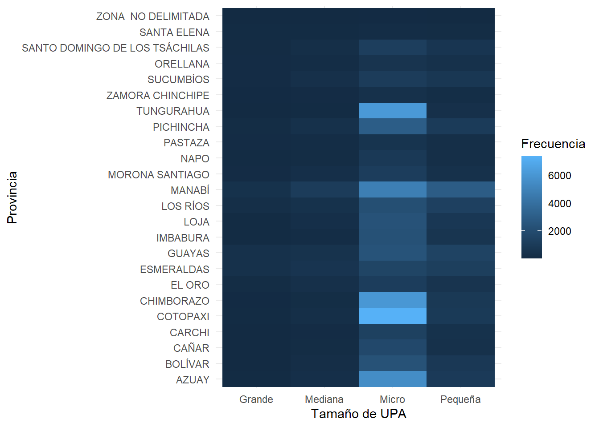
Interpretación
Las celdas con mayor intensidad representan combinaciones con mayor cantidad de observaciones. Esta visualización permite identificar patrones estructurales entre provincia y tamaño de UPA.
19.29 Tabla de correlación
Cuando trabajamos con variables numéricas, también podemos evaluar asociaciones lineales mediante una matriz de correlación.
En este caso analizaremos:
log_supertotal
fact_exp_finbase_analitica |>
select(
log_supertotal,
fact_exp_fin
) |>
cor(
use = "complete.obs"
) |>
knitr::kable(
digits = 3,
caption = "Matriz de correlación entre variables numéricas"
)| log_supertotal | fact_exp_fin | |
|---|---|---|
| log_supertotal | 1.000 | -0.145 |
| fact_exp_fin | -0.145 | 1.000 |
Interpretación
La matriz de correlación muestra la dirección y fuerza de la asociación lineal entre las variables numéricas seleccionadas.
19.30 Visualización simple de correlación
Para evitar depender de paquetes adicionales, podemos representar la correlación mediante un gráfico de dispersión con línea de tendencia, como se mostró anteriormente.
ggplot(
base_analitica,
aes(
x = log_supertotal,
y = fact_exp_fin
)
) +
geom_point(
alpha = 0.25
) +
geom_smooth(
method = "lm"
) +
theme_minimal() +
labs(
x = "Logaritmo de la superficie total",
y = "Factor de expansión"
)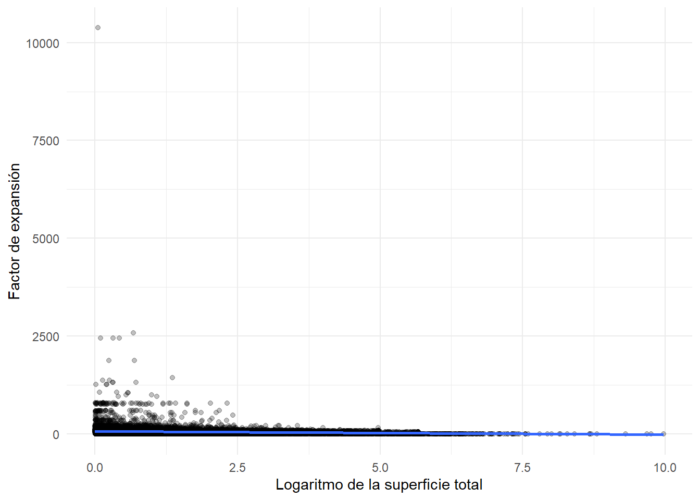
Interpretación
El gráfico complementa la tabla de correlación al permitir observar visualmente la dispersión de los datos y la tendencia promedio.
19.31 Buenas prácticas para visualizaciones multivariadas
Las visualizaciones multivariadas pueden ser muy útiles, pero también pueden volverse confusas si se incorporan demasiadas dimensiones al mismo tiempo.
Se recomienda:
- Incorporar variables gradualmente.
- Utilizar colores solo cuando aporten información.
- Evitar gráficos excesivamente saturados.
- Mantener etiquetas claras.
- Interpretar los patrones con cautela.
- No confundir asociación visual con causalidad.
La visualización debe ayudar a comprender los datos, no complicar innecesariamente su lectura (Healy, 2018).
19.32 Visualizaciones territoriales: de tablas planas a mapas inteligentes
Los datos territoriales permiten pasar de una tabla tradicional a una representación espacial del fenómeno estudiado. Cuando una base contiene provincias, cantones, coordenadas o cualquier referencia geográfica, es posible construir mapas que ayuden a identificar patrones regionales, concentraciones y diferencias espaciales (Lovelace et al., 2019).
En esta sección construiremos una introducción práctica al análisis espacial en R utilizando Ecuador como referencia. El objetivo no es desarrollar todavía un análisis espacial avanzado, sino comprender la lógica básica de los mapas estáticos, los puntos georreferenciados, los sistemas de coordenadas, los buffers y los mapas interactivos.
19.33 Preparación del laboratorio espacial
Para trabajar con datos espaciales utilizaremos sf, que permite manejar geometrías geográficas, y leaflet, que permite construir mapas interactivos. Para asegurar que el capítulo se renderice correctamente en HTML, Word y PDF, los mapas interactivos se mostrarán solo cuando el formato de salida sea HTML. En Word y PDF se mostrará una versión estática.
library(sf)
library(leaflet)
library(maps)
library(htmlwidgets)19.34 Fase 1: la geometría del Ecuador
El primer paso consiste en obtener una geometría simple del Ecuador. Para evitar descargas externas y hacer que el capítulo se renderice de forma estable, utilizaremos la cartografía incluida en el paquete maps.
ecuador_mapa_objeto <- maps::map(
database = "world",
regions = "Ecuador",
plot = FALSE,
fill = TRUE
)
ecuador_sf <- sf::st_as_sf(
ecuador_mapa_objeto
)
sf::st_crs(
ecuador_sf
) <- 432619.35 Explorando el objeto espacial
ecuador_sf |>
head() |>
knitr::kable(
caption = "Estructura básica del objeto espacial del Ecuador"
)| ID | geom | |
|---|---|---|
| Ecuador | Ecuador | MULTIPOLYGON (((-80.13159 -… |
Interpretación
El objeto ecuador_sf contiene una columna especial llamada geom. Esa columna almacena la geometría del territorio. Sin esa columna tendríamos una tabla tradicional; con ella tenemos un objeto espacial.
19.36 Visualizando la geometría pura
ggplot(
ecuador_sf
) +
geom_sf(
fill = "gray90",
color = "white",
linewidth = 0.3
) +
theme_void() +
labs(
caption = "Fuente: paquete maps"
)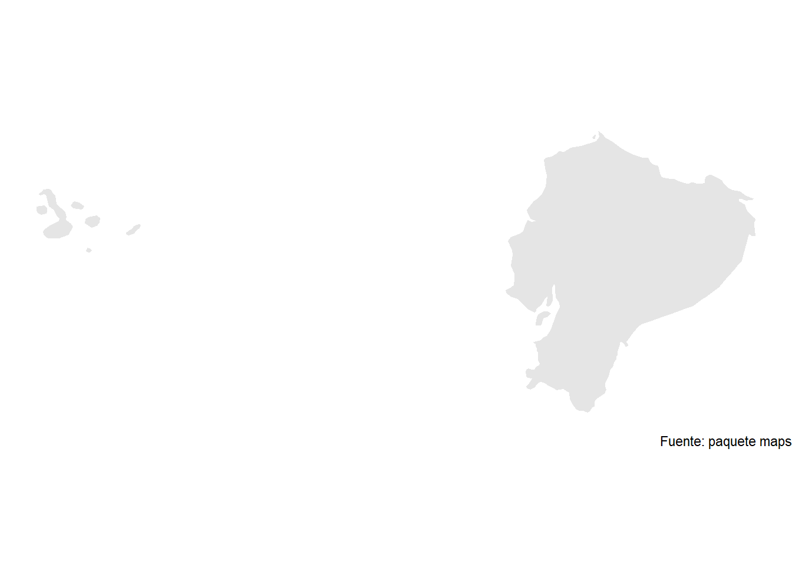
Interpretación
Este mapa muestra la geometría básica del Ecuador. Es una representación simple, pero suficiente para introducir la lógica de los datos espaciales.
19.37 Fase 2: el sistema de coordenadas
Todo mapa necesita un sistema de referencia de coordenadas. En este ejemplo trabajaremos con EPSG:4326, que corresponde al sistema de coordenadas geográficas usado comúnmente por GPS.
data.frame(
elemento = "Mapa del Ecuador",
crs = as.character(
sf::st_crs(
ecuador_sf
)$input
)
) |>
knitr::kable(
caption = "Sistema de referencia de coordenadas del mapa"
)| elemento | crs |
|---|---|
| Mapa del Ecuador | EPSG:4326 |
Interpretación
El sistema EPSG:4326 expresa la ubicación mediante longitud y latitud. Es apropiado para representar puntos en un mapa, aunque para medir distancias o construir áreas de influencia se recomienda transformar los datos a un sistema proyectado.
19.38 Fase 3: creación de puntos geográficos
Ahora construiremos una tabla con coordenadas aproximadas de algunas ciudades del Ecuador. Esta tabla representa puntos geográficos.
ciudades_df <- data.frame(
ciudad = c(
"Quito",
"Guayaquil",
"Cuenca",
"Loja",
"Manta",
"Coca"
),
longitud = c(
-78.4678,
-79.8891,
-79.0059,
-79.2042,
-80.7089,
-76.9869
),
latitud = c(
-0.1807,
-2.1894,
-2.9006,
-3.9931,
-0.9677,
-0.4629
)
)
ciudades_df |>
knitr::kable(
caption = "Coordenadas aproximadas de ciudades del Ecuador"
)| ciudad | longitud | latitud |
|---|---|---|
| Quito | -78.4678 | -0.1807 |
| Guayaquil | -79.8891 | -2.1894 |
| Cuenca | -79.0059 | -2.9006 |
| Loja | -79.2042 | -3.9931 |
| Manta | -80.7089 | -0.9677 |
| Coca | -76.9869 | -0.4629 |
Interpretación
La tabla contiene nombres de ciudades y sus coordenadas aproximadas. Todavía no es un objeto espacial, pero contiene la información necesaria para convertirse en uno.
19.39 Conversión de tabla a objeto espacial
ciudades_sf <- sf::st_as_sf(
ciudades_df,
coords = c(
"longitud",
"latitud"
),
crs = 4326
)ciudades_sf |>
head() |>
knitr::kable(
caption = "Ciudades convertidas en objeto espacial"
)| ciudad | geometry |
|---|---|
| Quito | POINT (-78.4678 -0.1807) |
| Guayaquil | POINT (-79.8891 -2.1894) |
| Cuenca | POINT (-79.0059 -2.9006) |
| Loja | POINT (-79.2042 -3.9931) |
| Manta | POINT (-80.7089 -0.9677) |
| Coca | POINT (-76.9869 -0.4629) |
Interpretación
La columna de coordenadas se convierte en geometría. Ahora ciudades_sf puede representarse sobre el mapa del Ecuador.
19.40 Verificando compatibilidad espacial
data.frame(
capa = c(
"Ecuador",
"Ciudades"
),
crs = c(
sf::st_crs(
ecuador_sf
)$epsg,
sf::st_crs(
ciudades_sf
)$epsg
)
) |>
knitr::kable(
caption = "Comparación de sistemas de coordenadas"
)| capa | crs |
|---|---|
| Ecuador | 4326 |
| Ciudades | 4326 |
Interpretación
Ambas capas se encuentran en el mismo sistema de coordenadas. Esto permite superponerlas correctamente.
19.41 Fase 4: mapa estático con puntos
mapa_ciudades <- ggplot() +
geom_sf(
data = ecuador_sf,
fill = "gray92",
color = "white",
linewidth = 0.3
) +
geom_sf(
data = ciudades_sf,
color = "red",
size = 2.8
) +
geom_sf_text(
data = ciudades_sf,
aes(
label = ciudad
),
size = 3,
nudge_y = 0.25,
check_overlap = TRUE
) +
theme_void() +
labs(
caption = "Fuente: elaboración propia con coordenadas aproximadas"
)
mapa_ciudades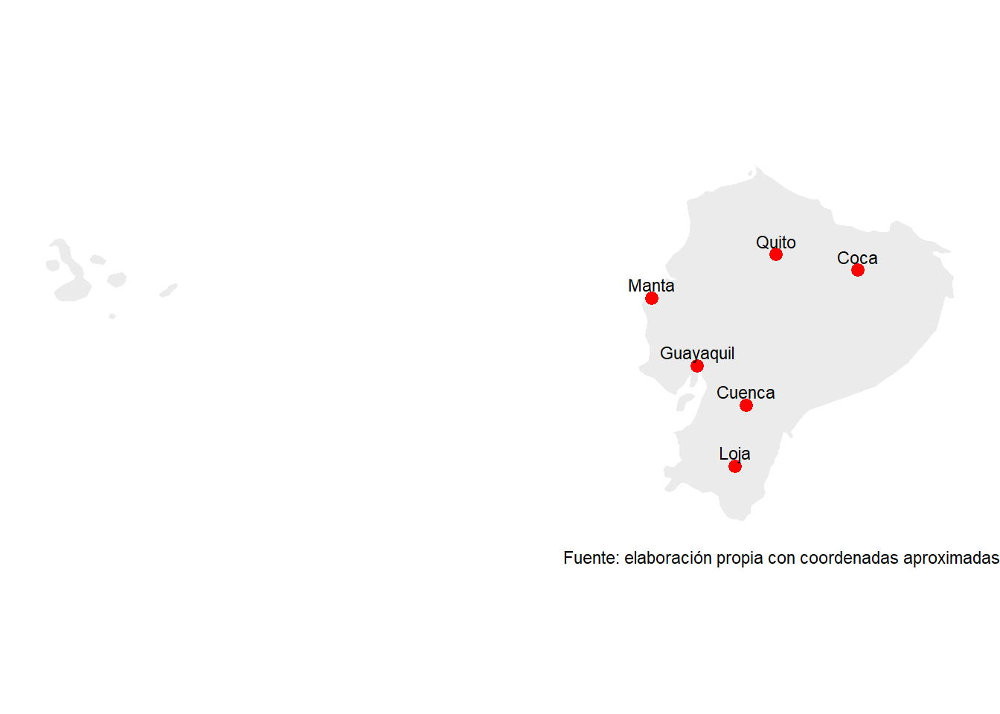
Interpretación
El mapa muestra varias ciudades ubicadas sobre el territorio ecuatoriano. Este tipo de visualización permite representar información puntual, como sedes, mercados, estaciones, encuestas o proyectos.
19.42 Fase 5: el centro de gravedad territorial
El centroide es un punto que representa el centro geométrico aproximado de una geometría. Puede utilizarse para ubicar etiquetas, símbolos o referencias territoriales.
centroide_ecuador <- sf::st_centroid(
ecuador_sf
)ggplot() +
geom_sf(
data = ecuador_sf,
fill = "gray92",
color = "white",
linewidth = 0.3
) +
geom_sf(
data = centroide_ecuador,
color = "gold",
size = 4,
shape = 18
) +
theme_void()Interpretación
El punto dorado representa el centroide geométrico aproximado del Ecuador. Esta idea será útil más adelante para ubicar etiquetas o símbolos en mapas.
19.43 Fase 6: análisis de proximidad mediante buffers
Un buffer representa un área de influencia alrededor de un punto, línea o polígono. Para construir buffers en metros, transformaremos las ciudades a un sistema proyectado. En este ejemplo utilizaremos EPSG:3857, suficiente para una demostración pedagógica.
ciudades_buffer <- ciudades_sf |>
sf::st_transform(
crs = 3857
) |>
sf::st_buffer(
dist = 50000
) |>
sf::st_transform(
crs = 4326
)19.44 Mapa de áreas de influencia
mapa_buffer <- ggplot() +
geom_sf(
data = ecuador_sf,
fill = "gray95",
color = "white",
linewidth = 0.3
) +
geom_sf(
data = ciudades_buffer,
fill = "steelblue",
color = "steelblue",
alpha = 0.25
) +
geom_sf(
data = ciudades_sf,
color = "red",
size = 2.5
) +
theme_void() +
labs(
caption = "Buffer aproximado de 50 km"
)
mapa_buffer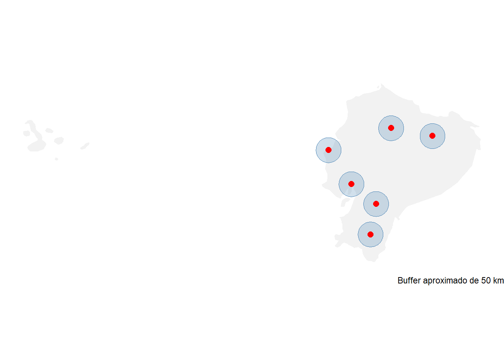
Interpretación
Los círculos representan áreas de influencia aproximadas de 50 kilómetros alrededor de cada ciudad. Esta técnica puede utilizarse para analizar cobertura territorial, accesibilidad o cercanía a servicios.
19.45 Fase 7: indicadores provinciales sin polígonos provinciales
Aun cuando no tengamos cartografía provincial detallada, podemos representar indicadores territoriales mediante coordenadas aproximadas de provincias. Primero calculamos la superficie promedio ponderada por provincia.
indicadores_provincia <- base_analitica |>
group_by(
provincia
) |>
summarise(
superficie_promedio =
weighted.mean(
supertotal,
fact_exp_fin,
na.rm = TRUE
),
observaciones =
n(),
.groups = "drop"
) |>
arrange(
desc(
superficie_promedio
)
)
indicadores_provincia |>
knitr::kable(
digits = 2,
caption = "Indicadores provinciales de superficie promedio"
)| provincia | superficie_promedio | observaciones |
|---|---|---|
| ZONA NO DELIMITADA | 18.41 | 188 |
| PASTAZA | 12.25 | 1089 |
| SANTA ELENA | 10.94 | 455 |
| ORELLANA | 7.85 | 1301 |
| MORONA SANTIAGO | 5.87 | 1940 |
| ZAMORA CHINCHIPE | 5.70 | 767 |
| SUCUMBÍOS | 5.13 | 2299 |
| NAPO | 5.08 | 1362 |
| ESMERALDAS | 4.23 | 3815 |
| EL ORO | 3.36 | 2252 |
| GUAYAS | 2.85 | 4801 |
| MANABÍ | 2.74 | 9294 |
| LOJA | 2.24 | 3549 |
| LOS RÍOS | 2.18 | 4241 |
| SANTO DOMINGO DE LOS TSÁCHILAS | 2.07 | 2220 |
| PICHINCHA | 1.73 | 4570 |
| CARCHI | 1.56 | 1981 |
| CAÑAR | 1.37 | 2403 |
| IMBABURA | 1.34 | 3198 |
| BOLÍVAR | 1.32 | 3463 |
| AZUAY | 1.12 | 6883 |
| CHIMBORAZO | 0.78 | 7175 |
| COTOPAXI | 0.69 | 8664 |
| TUNGURAHUA | 0.37 | 6628 |
Interpretación
La tabla resume la superficie promedio ponderada por provincia. Este indicador será representado mediante puntos sobre el mapa.
19.46 Coordenadas aproximadas de provincias
coords_provincia <- data.frame(
provincia = c(
"Azuay",
"Bolivar",
"Canar",
"Carchi",
"Chimborazo",
"Cotopaxi",
"El Oro",
"Esmeraldas",
"Galapagos",
"Guayas",
"Imbabura",
"Loja",
"Los Rios",
"Manabi",
"Morona Santiago",
"Napo",
"Orellana",
"Pastaza",
"Pichincha",
"Santa Elena",
"Santo Domingo de los Tsachilas",
"Sucumbios",
"Tungurahua",
"Zamora Chinchipe"
),
longitud = c(
-79.00,
-79.00,
-78.85,
-77.90,
-78.65,
-78.60,
-79.95,
-79.65,
-90.40,
-79.90,
-78.15,
-79.20,
-79.45,
-80.35,
-77.95,
-77.85,
-76.85,
-77.00,
-78.50,
-80.70,
-79.20,
-76.60,
-78.60,
-78.95
),
latitud = c(
-2.90,
-1.60,
-2.55,
0.80,
-1.70,
-0.85,
-3.45,
0.95,
-0.75,
-2.15,
0.35,
-4.00,
-1.45,
-0.95,
-2.50,
-0.85,
-0.45,
-1.60,
-0.20,
-2.20,
-0.25,
0.05,
-1.25,
-4.05
)
)
coords_provincia |>
head() |>
knitr::kable(
caption = "Coordenadas aproximadas de provincias"
)| provincia | longitud | latitud |
|---|---|---|
| Azuay | -79.00 | -2.90 |
| Bolivar | -79.00 | -1.60 |
| Canar | -78.85 | -2.55 |
| Carchi | -77.90 | 0.80 |
| Chimborazo | -78.65 | -1.70 |
| Cotopaxi | -78.60 | -0.85 |
Interpretación
Estas coordenadas no sustituyen una cartografía oficial, pero son útiles para construir un ejemplo didáctico estable y reproducible.
19.47 Unión entre indicadores y coordenadas
normalizar_texto <- function(x) {
x |>
as.character() |>
iconv(
to = "ASCII//TRANSLIT"
) |>
toupper() |>
trimws()
}
indicadores_provincia <- indicadores_provincia |>
mutate(
provincia_join =
normalizar_texto(
provincia
)
)
coords_provincia <- coords_provincia |>
mutate(
provincia_join =
normalizar_texto(
provincia
)
)mapa_provincial_puntos <- coords_provincia |>
left_join(
indicadores_provincia,
by = "provincia_join",
suffix = c(
"_coord",
"_dato"
)
)
mapa_provincial_puntos |>
select(
provincia_coord,
superficie_promedio,
observaciones,
longitud,
latitud
) |>
head() |>
knitr::kable(
digits = 2,
caption = "Base para el mapa provincial de puntos"
)| provincia_coord | superficie_promedio | observaciones | longitud | latitud |
|---|---|---|---|---|
| Azuay | 1.12 | 6883 | -79.00 | -2.90 |
| Bolivar | 1.32 | 3463 | -79.00 | -1.60 |
| Canar | 1.37 | 2403 | -78.85 | -2.55 |
| Carchi | 1.56 | 1981 | -77.90 | 0.80 |
| Chimborazo | 0.78 | 7175 | -78.65 | -1.70 |
| Cotopaxi | 0.69 | 8664 | -78.60 | -0.85 |
Interpretación
La base resultante combina coordenadas aproximadas con indicadores provinciales. Esto permite representar información estadística en el mapa.
19.48 Mapa provincial de puntos
mapa_provincial <- ggplot() +
geom_sf(
data = ecuador_sf,
fill = "gray93",
color = "white",
linewidth = 0.3
) +
geom_point(
data = mapa_provincial_puntos,
aes(
x = longitud,
y = latitud,
size = superficie_promedio
),
alpha = 0.7,
color = "steelblue"
) +
coord_sf() +
theme_void() +
labs(
size = "Superficie promedio",
caption = "Fuente: ESPAC 2025 y cartografía básica del paquete maps"
)
mapa_provincial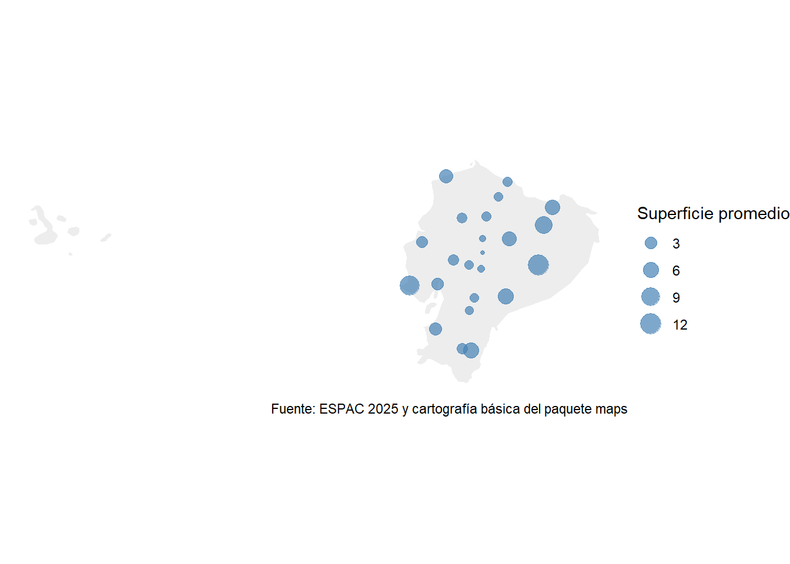
Interpretación
El tamaño de cada punto representa la superficie promedio ponderada de la provincia. Esta visualización permite comparar territorios sin requerir polígonos provinciales.
19.49 Mapa provincial con etiquetas
mapa_provincial_etiquetas <- ggplot() +
geom_sf(
data = ecuador_sf,
fill = "gray93",
color = "white",
linewidth = 0.3
) +
geom_point(
data = mapa_provincial_puntos,
aes(
x = longitud,
y = latitud,
size = superficie_promedio
),
alpha = 0.7,
color = "steelblue"
) +
geom_text(
data = mapa_provincial_puntos,
aes(
x = longitud,
y = latitud,
label = provincia_coord
),
size = 2.5,
nudge_y = 0.12,
check_overlap = TRUE
) +
coord_sf() +
theme_void() +
labs(
size = "Superficie promedio",
caption = "Fuente: ESPAC 2025 y cartografía básica del paquete maps"
)
mapa_provincial_etiquetas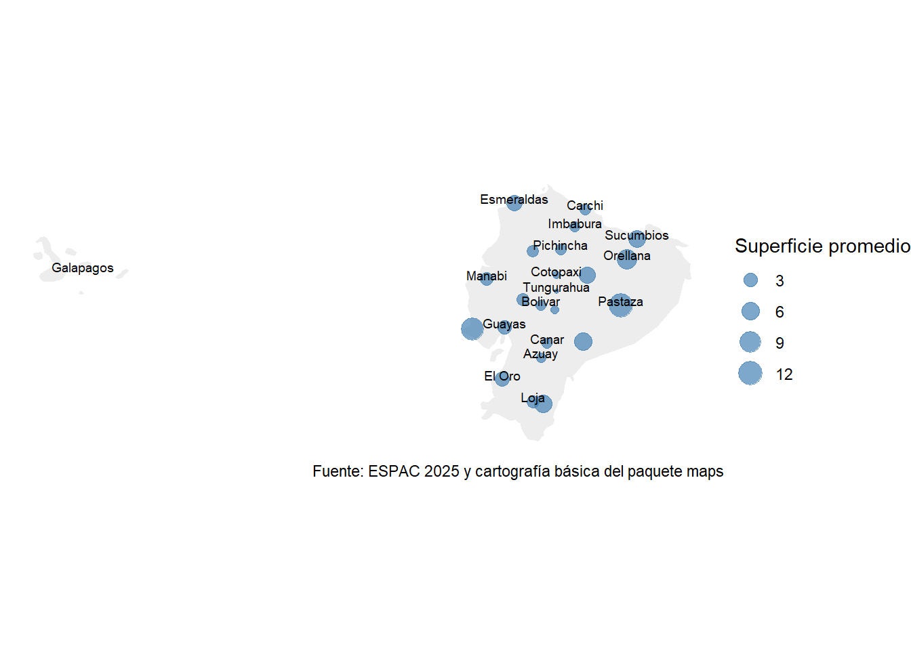
Interpretación
Las etiquetas ayudan a reconocer las provincias representadas. Cuando existen demasiadas etiquetas, es recomendable usarlas con moderación para no saturar el mapa.
19.50 Fase 8: mapa dinámico con leaflet
Los mapas estáticos son adecuados para tesis, artículos e informes impresos. Los mapas dinámicos, en cambio, permiten explorar información en HTML.
mapa_provincial_sf <- sf::st_as_sf(
mapa_provincial_puntos,
coords = c(
"longitud",
"latitud"
),
crs = 4326
)if (
knitr::is_html_output()
) {
leaflet() |>
addProviderTiles(
providers$CartoDB.Positron
) |>
addPolygons(
data = ecuador_sf,
color = "white",
weight = 1,
fillOpacity = 0.20
) |>
addCircleMarkers(
data = mapa_provincial_sf,
radius = ~sqrt(
superficie_promedio
),
color = "steelblue",
fillOpacity = 0.70,
popup = ~paste0(
"<b>Provincia: </b>",
provincia_coord,
"<br><b>Superficie promedio: </b>",
round(
superficie_promedio,
2
),
"<br><b>Observaciones: </b>",
observaciones
)
)
} else {
mapa_provincial
}Interpretación
En HTML, el mapa permite explorar cada provincia mediante ventanas emergentes. En Word y PDF se mantiene la versión estática, garantizando que el capítulo se renderice correctamente.
19.51 Mapa dinámico con capas
if (
knitr::is_html_output()
) {
leaflet() |>
addProviderTiles(
providers$CartoDB.Positron,
group = "Mapa claro"
) |>
addProviderTiles(
providers$CartoDB.DarkMatter,
group = "Mapa oscuro"
) |>
addPolygons(
data = ecuador_sf,
color = "white",
weight = 1,
fillOpacity = 0.15,
group = "Ecuador"
) |>
addCircleMarkers(
data = ciudades_sf,
color = "red",
radius = 5,
fillOpacity = 0.8,
popup = ~paste0(
"<b>Ciudad: </b>",
ciudad
),
group = "Ciudades"
) |>
addCircleMarkers(
data = mapa_provincial_sf,
radius = ~sqrt(
superficie_promedio
),
color = "steelblue",
fillOpacity = 0.7,
popup = ~paste0(
"<b>Provincia: </b>",
provincia_coord,
"<br><b>Superficie promedio: </b>",
round(
superficie_promedio,
2
)
),
group = "Indicadores provinciales"
) |>
addLayersControl(
baseGroups = c(
"Mapa claro",
"Mapa oscuro"
),
overlayGroups = c(
"Ecuador",
"Ciudades",
"Indicadores provinciales"
),
options = layersControlOptions(
collapsed = FALSE
)
)
} else {
mapa_provincial_etiquetas
}Interpretación
El mapa dinámico con capas permite activar o desactivar información. Esta lógica es muy útil en tableros de control, informes digitales y plataformas de visualización territorial.
19.52 ¿Mapa estático o mapa dinámico?
Un mapa estático es como una fotografía: el investigador controla completamente el diseño final. Es ideal para tesis, artículos, documentos PDF e informes impresos.
Un mapa dinámico es una experiencia interactiva: el lector decide qué explorar. Es ideal para reportes HTML, tableros de control y productos digitales.
Ambos tipos de mapas son útiles. La elección depende del objetivo de comunicación y del formato final del documento.
19.53 Buenas prácticas para visualización espacial
Al construir mapas se recomienda:
- Usar sistemas de coordenadas adecuados.
- Verificar que las capas compartan el mismo CRS.
- Evitar medir distancias en grados.
- Transformar los datos antes de construir buffers.
- No saturar el mapa con demasiadas etiquetas.
- Usar mapas dinámicos solo cuando la interacción aporte valor.
- Acompañar los mapas con una interpretación clara.
19.54 Manos a la obra
Utilizando la base base_analitica:
- Construya un mapa base del Ecuador.
- Cree una tabla con coordenadas de tres ciudades ecuatorianas.
- Convierta la tabla en un objeto
sf. - Verifique el sistema de coordenadas de las capas.
- Construya un mapa estático con ciudades.
- Calcule un buffer de 50 km alrededor de las ciudades.
- Calcule la superficie promedio ponderada por provincia.
- Represente el indicador provincial mediante puntos.
- Genere un mapa interactivo con
leaflet. - Compare las ventajas de un mapa estático y un mapa dinámico.
19.55 Resumen del capítulo
La visualización de datos constituye una herramienta fundamental para explorar, comprender y comunicar información estadística.
En la primera parte del capítulo aprendimos a representar distribuciones y comparar grupos mediante histogramas, curvas de densidad, gráficos de barras y diagramas de caja. También incorporamos la transformación logarítmica de la superficie total para mejorar la visualización de una variable altamente asimétrica.
En la segunda parte exploramos relaciones entre variables mediante gráficos de dispersión, líneas de tendencia, facetas, mapas de calor y matrices de correlación. Estas herramientas permiten avanzar desde la descripción simple hacia el análisis de patrones más complejos.
Finalmente, en esta tercera parte introdujimos los fundamentos de la visualización espacial con sf, mapas estáticos con ggplot2, buffers y mapas dinámicos con leaflet. La estrategia utilizada permite comprender los conceptos esenciales del análisis espacial manteniendo compatibilidad con HTML, Word y PDF.
En conjunto, las herramientas presentadas en este capítulo preparan al lector para construir gráficos científicos más refinados y comunicativamente efectivos, tema que se abordará en el siguiente capítulo.